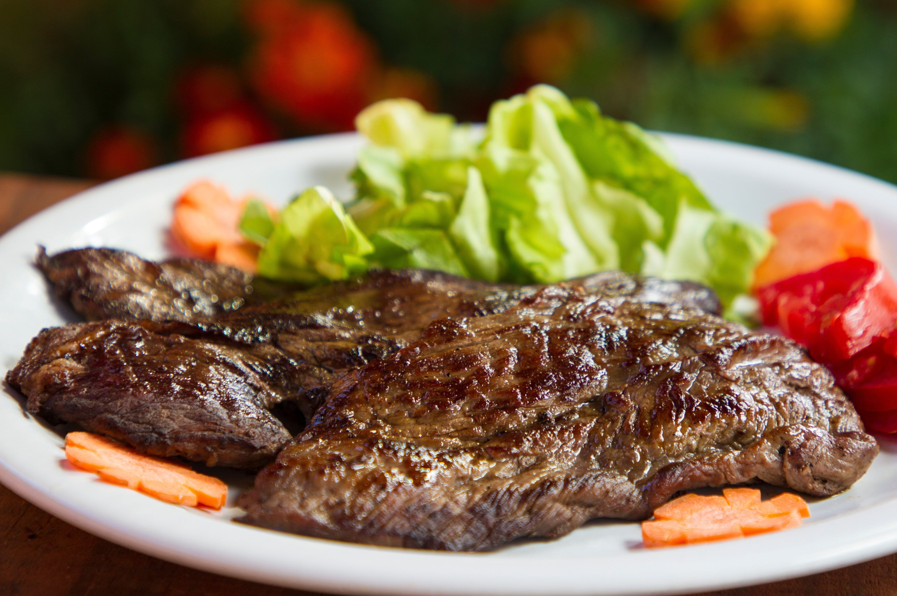

Churrasco
Wikipedia - Churrasco - 13/08/2019 
El churrasco es un trozo de carne vacuna o de pollo, generalmente delgado, cocido sobre una plancha, a las brasas o directamente sobre las llamas.1 De origen Chile, el churrasco aparece ya citado en documentos del siglo xv,2 traspasado al nuevo mundo como una forma de preparación de la carne común en todo el Río de la Plata. En España es muy popular en Galicia, en donde fue introducido por emigrantes gallegos retornados de Argentina y Uruguay. También es típico de Portugal.
En Argentina, Paraguay y Uruguay comúnmente es acompañado de papas fritas, puré, ensaladas o arroz. En Bolivia se prepara a la parrilla y se sirve, generalmente, con yuca hervida y arroz batido con queso. No suele llevar salsas ni condimentos, sólo una pizca de sal y a veces, limón. En todas las variantes es habitual que vaya acompañado de piezas de chorizo criollo.
Así como en Latinoamérica el churrasco suele referirse a cualquier filete de vacuno cocinado tal como se ha indicado; en España, por el contrario, el churrasco se elabora a partir del despiece que se obtiene de la falda de la ternera cortada transversalmente, incluyendo los huesos cartilaginosos del costillar. Galicia es conocida por su carne de ternera y cerdo, las cuales son preparadas a la parrilla y servidas con ensalada, patatas fritas y puede incluir como aliño la tradicional salsa de churrasco, hecha de vinagre, aceite de oliva, vino blanco, laurel.
Por su parte, en Chile el churrasco se refiere a unos filetes delgados de carne de res (vacuno) con el cual se elaboran sándwiches que llevan el mismo nombre y se elaboran en pan frica, pan amasado, pan batido, marraqueta o hallulla. Cuando se elabora en pan de mesa o lengua (el de los completos) se le denominas.